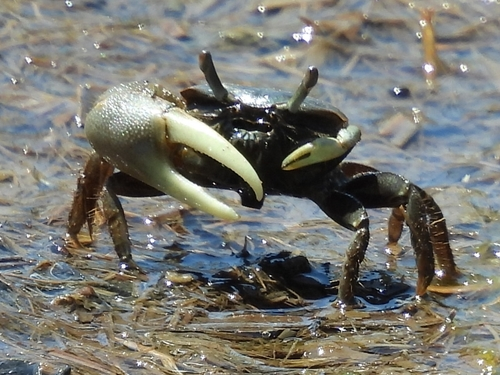
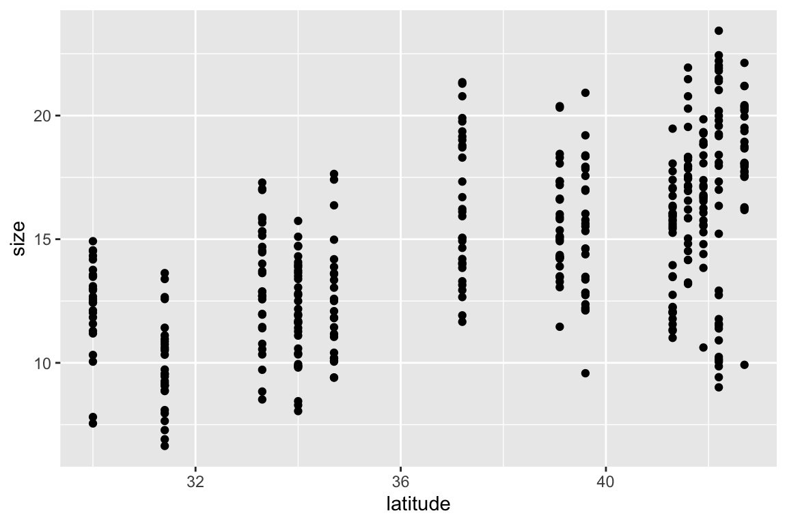
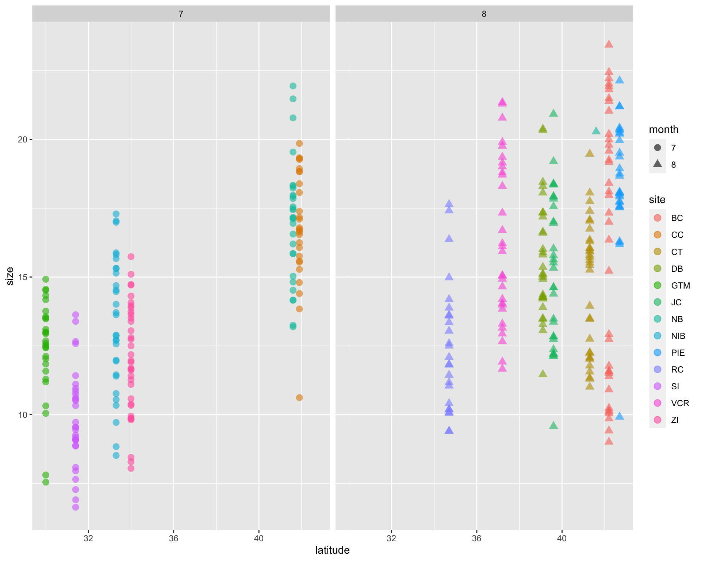
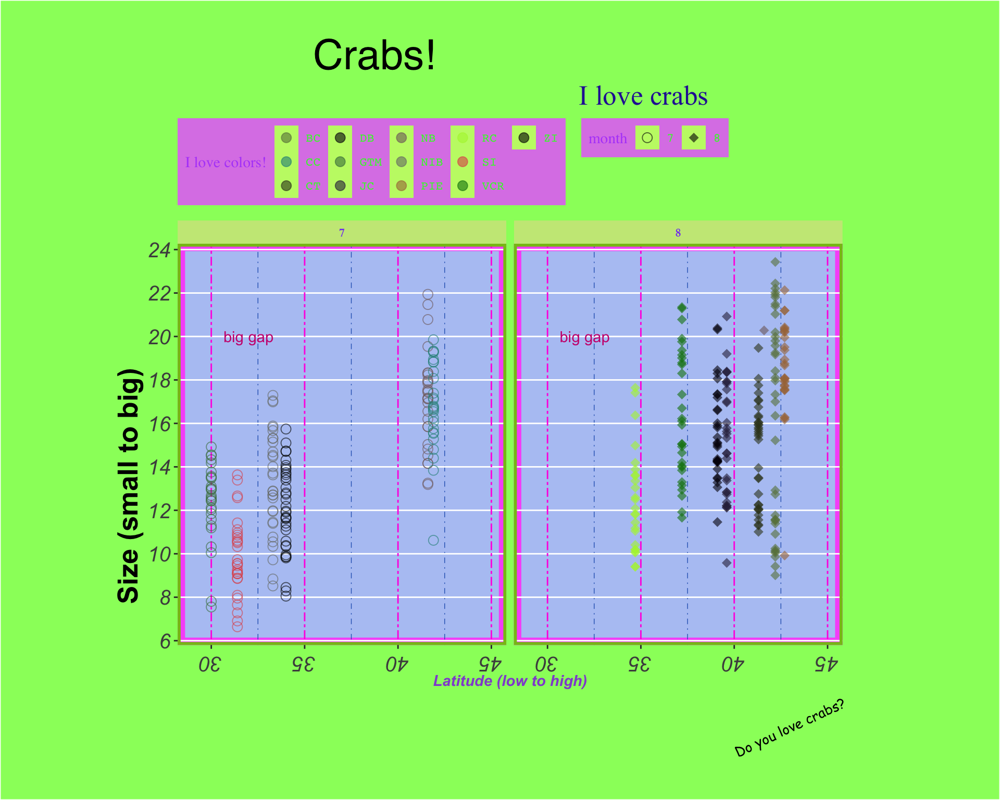
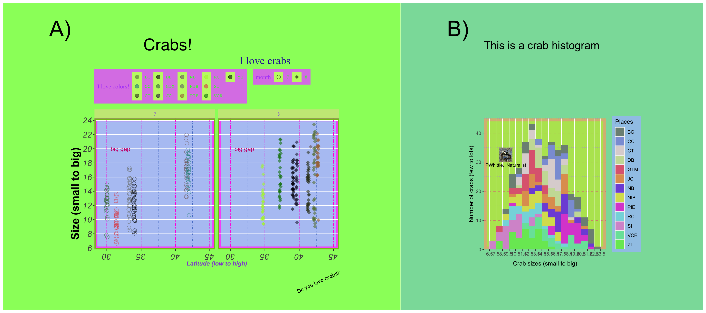

library(tidyverse) # for general cleaning, ggplot
library(patchwork) # for putting multipanel plots together
library(magick) # for making images vectors
library(lubridate) # for working with dates
library(lterdatasampler) # data package
Introduction
I gave a workshop for EEMB’s R seminar where the topic was ostensibly “publication-ready figures in ggplot”. However, since I’ve been thinking about these things a lot, I wanted to talk a bit about design and why it matters. There are two major questions I ask myself when making a figure (or any kind of visual):
1. What is the message?
2. How do I convey the message?
For me, 1) is sometimes the hardest part, but once I figure it out I feel pretty set. But 2) takes into account design and requires me to think critically about the audience, the medium in which I am presenting this message (e.g. in a paper, poster, talk), and the way I design a plot to wrap that all up.
For me, addressing 2) means I share whatever bad thing I’ve made to get feedback on how to make it better. This is a very important step! No matter how much I think something is good, I am ultimately not the best judge of how the message is conveyed - an audience is. I am very lucky to have friends and colleagues who will tell me gently but honestly that a figure is trash. I am very grateful for these people. After many iterations, I will hopefully come up with something I am happy with.
The problem with executing 2) is that often, making things “good” is often a barrier to making things at all. I used to struggle when presented with a new project because I didn’t want to make something bad (whatever that means). I could stand on a soapbox to talk about why our training (as people, as academics, whatever) makes this hard, but after lots of trial and error I’ve discovered that the best way of making things is exactly that: through trial and error. If you start out making something bad and you’re able to make it better, that means you’ve learned something along the way. This!! is good!! But that means you have to get over the initial step to make bad things.
The materials for this workshop are written for when you’re in the phase of addressing 2) - you know what your message is, but you’re figuring out how best to convey it through color, shape, etc. There are plenty of options in R for you to do this, but I’ve found that ggplot is the most straight-forward way for me to wrap my mind around customizing plots. In the spirit of “just make bad things so you can learn to make good things”, I wrote this workshop so we could make the ugliest plot possible. I got my inspiration for this from Emily Riederer’s ugliest ggplot gist.
Code
Set up
I used data from the lterdatasampler package, which provides little data vignettes from various Long-Term Ecological Research (LTER) sites in the US. I chose the fiddler crab dataset from the Plum Island Ecosystem LTER.
Data
This is a data set of crab sizes (column size) from Summer 2016 at 13 different marshes spanning 12 degrees latitude. Here’s a sample:
# A tibble: 5 × 9
date latitude site size air_temp air_temp_sd water_temp water_…¹ name
<date> <dbl> <chr> <dbl> <dbl> <dbl> <dbl> <dbl> <chr>
1 2016-08-12 42.2 BC 17 11.6 9.53 14.0 6.9 Bare…
2 2016-07-29 34 ZI 11.4 18.6 8.40 20.2 7.65 Zeke…
3 2016-07-25 41.9 CC 16.8 11.3 8.11 14.0 6.9 Cape…
4 2016-07-28 41.6 NB 21.5 12.2 9.48 17.5 7.86 Narr…
5 2016-07-25 41.9 CC 15.8 11.3 8.11 14.0 6.9 Cape…
# … with abbreviated variable name ¹water_temp_sdI made some adjustments because I wanted to plot things by month (for extra chaos).
crab_data <- pie_crab %>%
# extracting month from the date column using lubridate::month()
# also making this a factor (instead of numeric) using as.factor()
mutate(month = as.factor(month(date)))ggplot grammar
ggplot works in layers. The code to make a plot can vary, but always includes:
1. the ggplot() call: this tells R that you want to use the function ggplot() in ggplot to plot things.
2. data and aesthetics within that ggplot() call: tells ggplot to use a specific data frame any variables in that data frame that should be represented in the plot (for example, x- and y- axes, colors, shapes)
3. a geom_(): short for “geometry”, geom_() calls tell ggplot what kind of plot you want to make.
# step 1: call ggplot
ggplot(
# step 2: specify the data and the aesthetics
# plotting latitude on the x-axis and crab size on the y-axis
data = crab_data, aes(x = latitude, y = size)) +
# step 3: specify a geom - in this case, we're creating a scatter plot
geom_point()
Aesthetics
aesthetics refer to anything in your data that you want rendered in your visualization: axes, colors, shapes, etc. When starting your ggplot object, you already have some calls in the aes() function: x = latitude and y = size. You can adjust the aesthetics of any variables you want: for example, if you wanted to color your points by site, you would include color = site in the aes() call. Important troubleshooting tip: if you are trying to color your points by site but it’s not working, double check that your color argument is actually in aes(). If you’ve specified color outside the aes(), then it’ll be applied independently of site.
I’m adjusting the aes() for the following plot to make sure that each site has a different color and each month has a different shape.
ggplot(data = crab_data, aes(x = latitude, y = size)) +
# putting the aesthetics in here: color points by site, shape points by month
geom_point(aes(color = site, shape = month),
# anything that doesn't have to do with variables (like point size or transparency) goes outside the aesthetics
size = 3, alpha = 0.6) +
# facet by month
facet_wrap(~ month)
Adjustments to defaults
Manual selections
You can adjust the colors, shapes, axis limits, etc. using one of the scale_ functions (try ?scale_ to see the many options).
Themes
A lot of customization comes from ggplot themes. Theme elements deal with everything else in the plot that doesn’t have to do with the data (e.g. the plot background, grid, etc.). There are a lot of arguments that you can stack up in theme() (try ?theme() to see all of them), but they generally fall into a few categories: 1. axes, 2. legends, 3. panels, 4, plots, 5, strips. There are built-in themes in ggplot that can make your plot look pretty good right away, but playing around with theme elements yourself is a great way of getting the exact plot you want.
Additionally, every argument takes a function modifying the elements: 1. lines, 2. rectangles (more broadly, shapes), 3. text. See the help pages for these functions (e.g. ?element_text()) to figure out what you can alter about each element - there’s a lot!
Annotations
Annotations are useful when you want to point something out on a plot. The function is annotate(), which adds an annotation layer onto your plot.
Labels
Lastly, you can adjust any text on labels using the labs() function.
crab_plot <- ggplot(data = crab_data, aes(x = latitude, y = size)) +
geom_point(aes(color = site, shape = month), size = 3, alpha = 0.6) +
facet_wrap(~ month) +
# scaling
# changing point colors + assigning each to a site
scale_color_manual(values = c("BC" = "#687f47", "CC" = "#268e86", "CT" = "#373f1f",
"DB" = "#03010a", "GTM" = "#447c49", "JC" = "#2e2747",
"NB" = "#7f696a", "NIB" = "#777a76", "PIE" = "#a87445",
"RC" = "#aef23a", "SI" = "#e05357", "VCR" = "#087f0c",
"ZI" = "#010201")) +
# changing the point shapes
scale_shape_manual(values = c("7" = 21, "8" = 18)) +
# changing x and y axis limits and breaks
scale_x_continuous(limits = c(29, 45)) +
scale_y_continuous(n.breaks = 10) +
# theme() call
theme(
# panel: anything having to do with the main area
panel.background = element_rect(fill = '#B5C7F4', color = '#F761F9', linewidth = 5),
panel.border = element_rect(fill = NA, color = "#87Bf18", linewidth = 2),
panel.grid.major.x = element_line(color = "#FF21E1", linetype = 6),
panel.grid.minor.x = element_line(color = "#2D65BF", linetype = 4),
panel.grid.minor.y = element_blank(),
# plot: anything having to do with the area around the panel
plot.background = element_rect(fill = "#98FC6A"),
plot.title = element_text(size = 30, hjust = 0.25, family = "Helvetica"),
plot.subtitle = element_text(size = 20, hjust = 0.75, color = "#2A23A3", family = "Times New Roman"),
plot.caption = element_text(size = 10, angle = 25, family = "Comic Sans MS"),
plot.margin = unit(c(1, 4, 1, 3), "cm"),
# axes: anything having to do with the x- and y- axes
axis.title.x = element_text(face = "bold.italic", color = "#9254D3"),
axis.title.y = element_text(family = "Arial", face = "bold", size = 20, hjust = 0.25),
axis.text = element_text(face = "italic", size = 15),
# note that axis.text options from above are inherited
axis.text.x.bottom = element_text(angle = 180),
# strips: anything having to do with the facet titles
strip.background = element_rect(fill = "#C9E886"),
strip.text = element_text(color = "#854EED", family = "Garamond", face = "bold"),
# legend: anything having to do with the legend
legend.background = element_rect(fill = "#DC86E8"),
legend.key = element_rect(fill = "#C2F774"),
legend.direction = "horizontal",
legend.position = "top",
legend.justification = "left",
legend.title = element_text(family = "serif", color = "#B452F9"),
legend.text = element_text(color = "#30F92C", family = "mono")
) +
# annotate: big gap
annotate(geom = "text", x = 32, y = 20, label = "big gap", color = "#CC107D") +
# labs: anything having to do with labels
labs(title = "Crabs!",
subtitle = "I love crabs",
x = "Latitude (low to high)",
y = "Size (small to big)",
caption = "Do you love crabs?",
col = "I love colors!")
crab_plot
Extras
Adding images to plots
There are many ways of adding images to plots. The package I’ll use is magick. This is a round-about way of getting an image in, but allows you to be flexible with your image types (gifs, etc.). I’ll just save this as an object called crab_image to use later.
# use magick::image_read() to read in the jpeg
crab_image <- image_read("pwhittle-fiddler-crab.jpeg") %>%
# turn this into a raster
as.raster()Putting plots together
There are a couple packages you can use to put plots together like panels in a figure. The big ones are patchwork and cowplot. Try each of them out and see what you like, but we’ll be using patchwork today.
Just to demonstrate how this works, I’m going to make up a histogram of crab sizes. The code is annotated if you’re interested in the customized aesthetics, but they’re not important for this demonstration.
# for a histogram, you don't need y in your aesthetic call
crab_hist <- ggplot(crab_data, aes(x = size)) +
# telling ggplot that you want to plot a histogram
geom_histogram(binwidth = 1, aes(fill = site)) +
# some scaling
scale_x_continuous(breaks = seq(from = 6.5, to = 24.5, by = 1)) +
scale_y_continuous(limits = c(0, 45), expand = c(0, 0)) +
scale_fill_manual(values = c("BC" = "#7D9084", "CC" = "#8B9FD9", "CT" = "#DDD5D5",
"DB" = "#CADDA5", "GTM" = "#DF697F", "JC" = "#E09E5F",
"NB" = "#7F56DB", "NIB" = "#D8DF5D", "PIE" = "#DC53D3",
"RC" = "#84D9DF", "SI" = "#D798D1", "VCR" = "#77E2A8",
"ZI" = "#76E762")) +
# some theme-ing
theme(
panel.background = element_rect(fill = '#B6E45F', color = '#DABA84', linewidth = 5),
panel.grid.minor.x = element_blank(),
panel.grid.major.y = element_line(color = "#E16B86", linetype = 2),
panel.grid.minor.y = element_line(color = "#B49CD2", linetype = 3),
legend.background = element_rect(fill = "#A0C8E8"),
plot.background = element_rect(fill = "#8ADDA8"),
plot.title = element_text(size = 20),
plot.margin = unit(c(1, 4, 1, 3), "cm")
) +
# some labeling
labs(x = "Crab sizes (small to big)",
y = "Number of crabs (few to lots)",
title = "This is a crab histogram",
fill = "Places") +
# adding the crab image
annotation_raster(crab_image, xmin = 8, xmax = 10, ymin = 30, ymax = 35) +
# annotating the plot with the photographer credit
annotate(geom = "text", x = 9, y = 29, label = "PWhittle, iNaturalist", size = 3)
crab_hist
patchwork thinks similarly to ggplot in that it takes things in layers with + signs, but also takes &. To be honest, I can’t remember the rules most of the time and I have to look them up.
# this automatically recognizes that you're putting plots together (no function call!)
crab_plots_together <- crab_plot + crab_hist +
# plot_layout: anything having to do with the way plots are arranged
# widths takes a ratio: the panel ratio will be 2:1 left:right
plot_layout(widths = c(2, 1)) +
# plot_annotation: anything having to do with annotations
plot_annotation(tag_levels = "A", tag_suffix = ")") & # annotating them with panel letters
# patchwork has its own theme options!
theme(plot.tag = element_text(size = 40)) # changing the size of the annotations
# display our beautiful plot
crab_plots_together
There you have it! Go forth and make ugly plots!
Citation
BibTeX citation:
@online{bui2023,
author = {An Bui},
editor = {},
title = {Customizing Themes in `Ggplot`},
date = {2023-02-13},
url = {https://an-bui.github.io/posts/2023-02-13_EEMB-R-seminar_figures-in-ggplot/},
langid = {en}
}
For attribution, please cite this work as:
An Bui. 2023. “Customizing Themes in `Ggplot`.” February
13, 2023. https://an-bui.github.io/posts/2023-02-13_EEMB-R-seminar_figures-in-ggplot/.